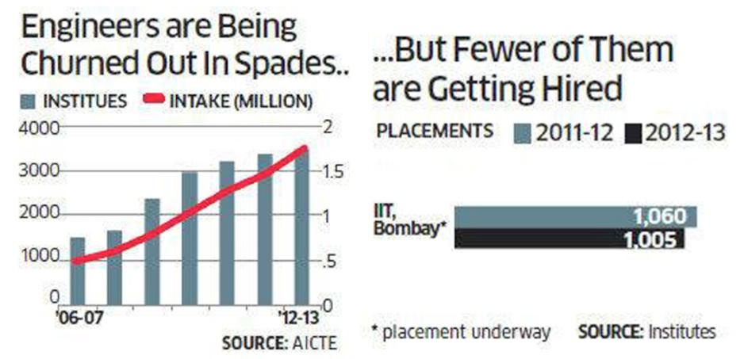

What happens when too many bark up the same tree ?
An Interesting revelation about technical courses.
Technical Saturation
Oishek Ray - 30.04.2016
The biggest decision and dilemma that Indian students face is the choice between Engineering and Medicine as a career path. Often, parents are accused of forcing their children down these paths – and notwithstanding the truth of these statements, the fact remains that it is a pivotal decision for young adults across the country.
However, there are practical considerations to be made when considering a career in either of these fields, because as all students know, simply completing a degree is not enough – getting a job is the real goal.
Engineering : By far the most popular course in India, engineering is not the golden goose of job placements as is made out by colleges across the country. According to CBSE statistics, at least 13.03 lakh students registered for JEE (Main) in 2014, while in 2015, that number jumped to 13.56 lakh. Shockingly, 2016 registered the biggest drop in JEE applications in recent history, with a total student base of 12.07 lakh.
This steep decline is easily explained by the poor state of job placements for engineering students. Out of the 15 lakh engineers churned out every year, a startling 33% do not get a job. Besides this, the entry-level salary for engineers has hit record lows in recent years. The reason for this is the dip in the IT industry’s growth rate – from 30% per annum to a measly 10.2% - because of which the supply of engineers far outstrips demand. From Tier II and III colleges, graduate salaries range from Rs. 1 – 2 lakh per year, with Rs. 1.7 lakh being the industry standard.
Medicine : AIIMS and the AIPMT remain the Holy Grail for many Indian students, who dream of making it big as financially flourishing, respected doctors in a bustling metropolis of in the country.
The truth is regrettably sadder. There are currently 370 medical colleges in the country that offer 49,840 MBBS seats between them. This makes India the largest creator of doctors in the world, an achievement that carries no real weight – especially when one realises the difficulty in gaining admission to such a college.
Forget the difficult entrance exams. Roughly half of India’s medical seats are in private colleges, whose habit of collecting capitation fees is an open secret. According to an interview by a senior member of the Medical Council of India, given to the Business Standard, no one has ever formally filed a complaint. Here’s a statistic for you, though: doing a back of the envelope calculation, if 24,260 seats are allotted with a Rs 50 lakh capitation each, that totals up to 12,130 crores a year in illegal income for the colleges.
Putting that aside and bringing into focus the outcomes of a medical degree in India., it takes about 5 years to gain an MBBS; after this a further 3 years will need to be spent in completing residency and a specialization. In case the intended career path in private practice, further studies abroad (involving an FRCS and/or MRCP) are required, entailing nearly Rs. 50 lakh in course fees. As for doctors applying for a job in hospital, entry-level salaries hover around a paltry Rs 4,00,000 per annum.
This article is not geared to discourage students from applying for these courses. Here at 1Application, we deal directly with thousands of cases across the country, and we have first-hand information on admission and placements. It is our sincere belief that the student of the future will have the courage and curiosity to explore other, untapped, lucrative fields of study – especially in up-and-coming fields like applied sciences and interdisciplinary degrees – and thus contribute to the “brain boom” in the country.